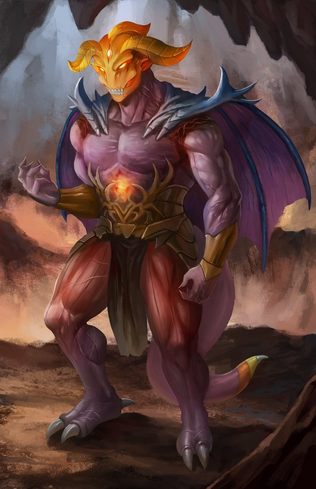

There’s this odd trope, which I have now come across in several examples of weird-dark Japanese fantasy, and never even slightly in anything from any other cultural source:
The gestalt masses of humanity, as a collective, made a wish. Because of their corrupt and sinful nature, they wished for something really fucking terrible. This wish was granted, and gave rise to a super-creepy evil entity that serves as the Metaphysical Big Bad of the narrative, standing in for “everything that is wrong with society.”
This is specifically something much stronger than the “so long as there is darkness in men’s hearts, I will survive” trope. The demon isn’t just feeding off of human badness, or reflecting it, in some nebulous way; it rules precisely because, at least on some level, people want it to rule and called it into being so that it might do so.
I’m not going to go into details, because in almost every case it would involve a huge spoiler for the work in question, but this pattern perfectly describes:
* Persona 5
* Berserk
* Fate/zero
* Paranoia Agent
…and even, to a lesser extent, Revolutionary Girl Utena.
(I feel like I’m missing a couple of salient examples here, but these will do for now.)
I am not sure what to make of this. It bespeaks a sort of reflexive super-ultra-cynicism about humanity, a contempt for the People, that I think of as being very much at odds with the standard fantasy feeling of “the nameless faceless People are the source of all legitimacy and virtue, which is why the good guys have to fight and die for them.” Is it just, like, a random cached concept that cropped up in one particular place? Is this a reflection of weirdo Japanese auteurs feeling really hemmed-in by a more-than-usually conformist culture?
Is there a TVTropes page for this that I can’t find?
I have no answers right now, just questions. But…it seemed worth making note of the pattern.
So I’m playing Persona 5. Like you do.
Persona 5, being a Persona game, has a lot of dating-sim and life-management-sim mixed in with its JRPG. And it’s just starting to hit me how fundamentally weird it is to play at making life decisions in the character of someone who has no personality.
Because that’s what the Persona 5 protagonist is. That’s what virtually every dating sim protagonist is, really. A man with no traits, beyond a sort of general-purpose heroism*. A bland cypher who can say or do anything in order to steer things in the particular direction that the player prefers.
* although, yes, it is very much worth noting what traits are in fact possessed by the “bland heroic nullity” – this is probably an important piece of cultural insight or something, in that it shines a light on culture tropes so fundamental that they go unlabeled
Like…
One of the major decisions, obviously, is “which girl do you date?” And it feels super awkward, because it’s supposed to be about forming a relationship, but there’s no actual relationship to form, because there’s only one actual person involved. One of the two love interests under serious consideration (for me) is an adorkable hikokomori otaku girl with a lot of complicated social trauma, and both my author-self and my thoughts-about-romance self are screaming “she needs to be with someone who shares her interests and who won’t feel crippled by her introversion!” – which is to say, with a fairly distinctive kind of human being – but the game provides no way to be that, or even to be definitively not-that. The other one is a serious brainy class-president Hermione Granger type, and it turns out that she wants to become a cop, and I’m wondering whether this is ever really going to be a problem for my notionally-chaotic-good has-Arsene-Lupin-as-his-spiritual-totem protagonist, and then I realize that I don’t know and I have no way to know.
You go through the game as a sort of walking, pretty-faced avatar of the mouse cursor. It’s theoretically a game about building relationships, but you aren’t enough of a person to relate to anyone, you’re just making choices and grabbing at things that the unseen-god Player finds interesting or desirable or fetish-fulfilling. The whole thing is kind of surreal.
I dunno. I like Persona 5, very much, don’t get me wrong. I like this genre generally. I even understand the appeal of keeping your options as wide-open as possible, of (e.g.) having a blank-cypher protagonist who can reasonably go out with any of the lovely tropey girls you’ve laid out for him. But I’m starting to wonder whether there’s a way to run things so that, as you make choices, you actually define yourself – you acquire traits that are visible in behavior, not just in stats – you close some doors as you open others – you become a person to whom the NPCs can react in a way that feels real.
(At some point, I should probably talk about the interaction of this stuff, narcissistic identity, gender, and the subject/object divide. The dating-sim protagonist is pure subject, which is perhaps here better rendered as “pure Male Gaze,” even given the fair number of games in which “he” is in fact female. He is legible only through his actions and achievements and acquisitions, not through anything tangible and lasting about his self. He is, uh, all verb and no noun. Which means, inter alia, that he has no identity at all. Which seems like it might lead somewhere interesting.)
fierceawakening:
iopele:
floozys:
flaming-salamanders:
floozys:
do american schools actually give that much of a shit about sports or is it a tv/movie thing?
My old high school spent over $1,000,000 on a new weight lifting room only for the football team to use. We desperately needed new desks, textbooks, and the language department needed stable teachers who didn’t quit after 3 months. but fuck that right? Football.
OMDHDNEHDH WHAT THE FUCK
yeah unfortunately tv and movies get it right, football is god in US high schools
Yup.
It is truly fucked.
Not to dis athletes in any way, they are pretty nifty.
But they are not more important than other people. And treating them like gods creates all kinds of problems for EVERYONE.
It should really be said that “American schools” is not a uniform category here, not even a little bit.
In the suburban NY school system where I grew up, school sports were…y’know, a thing, kind of. Approximately like what they are in Japan, or at least in the weird stylized version of Japan you get from Japanese popular media. The participants gave a shit, and a few community boosters did too, but not really anyone else. Athletes weren’t socially dominant in any kind of meaningful way. The administrators did spend far too much money on athletic facilities, but that was less about a special interest in sports than it was about being a visible prestige signal – they also spent far too much money on useless “leadership programs,” on a visually-impressive-but-not-really-functional auditorium, etc. It was probably even true that sports were seen as slightly declasse; this was the sort of suburb where Getting Into the Best College was the local religion, and the kids who were at the top of that game were likelier to spend their extracurricular time doing music or volunteer work or even theater than playing ball. (For that matter, no one team was particularly exalted over any of the others.)
On the other hand, you get the rural Texas towns where high school football is the community’s main sacred ritual, and where the players are basically semidivine boy-kings.
It’s a big, diverse country we got here.
wirehead-wannabe:
balioc:
wirehead-wannabe:
mailadreapta:
thathopeyetlives:
I’m somewhat confused by all the hatred for lawns – people saying that they are useless.
I don’t disagree that they are costly in terms of water and some kinds of maintenance. A better material culture would have fewer of them and there seem to be some perverse expectations (even regulations sometimes) that various landscaped areas should have lawns rather than other, more appropriate plants or landscape.
However, it’s totally obvious what lawns are for, to me. They’re for kids to play on or to play soccer or run around or sit for a picnic or whatever. And I don’t see why people don’t get *any* of that.
These people don’t have kids. Furthermore, children are so removed from their social circle and frame of mind that they don’t even think about what they would use the lawn for if they did have kids.
(Or they live in dense urban areas where playgrounds are no more than a few blocks away.)
I think it’s more the latter, but even a bit further. The broader model people are using here I think is “suburbia is cancer,” which I think is accurate even (especially?) if you have kids. It gets you suburban-brand Safety at the cost of making you into a suburbanite. Like yeah, there are reasons people make that tradeoff, but it’s hard to argue that it isn’t an example of widespread civilizational inadequacy. @sinesalvatorem @michaelblume back me up here.
OK, let’s actually talk about this. Why? What does “making you into a suburbanite” mean?
Unsurprisingly, I’ve had this exact conversation with a lot of people who are reflexively hostile to the suburbs. The answers I’ve gotten mostly seem to boil down to some combination of four things:
1) Prestige. We all know that only boring thick-necked American morons like the suburbs! You don’t want to be one of them, do you?
2) Aesthetics. To which, well, sure, you’re allowed to like or not-like whatever you want, but then this falls into the general category of “if you’re going to be vehemently angry about enforcing an aesthetic preference you should at least own up to it.”
3) The suburban lack of Social Culture in the form of clubs, neighborhood bars, Town Spirit, etc. There are obviously people for whom this is a legitimately a big deal. But I’d be surprised if it were a meaningful motivating factor amongst the hordes of introverted Internet nerds who mostly want to hang out with their friends and wish that they could just not have to deal with the rest of the world.
4) Environmental issues. Which are of course real and salient, and to the extent that’s what you mean, I’m not going to object. But people don’t generally talk about suburbia like “this is an awesome thing that we’re sadly going to have to give up to save the planet…”
…is that, in fact, it? Am I missing something? Where is all the “civilizational cancer” stuff coming from?
From my own personal standpoint, suburbia seems like a super good deal all around, except for the fact that you might want to have kids someday. You get lots of space at an almost-reasonable price! And privacy! And pretty trees! And you can still get to pretty much anything you want within like forty-five minutes, which is really not that much worse than living in most parts of a major city! It’s just a shame that, if you raise children in the suburbs, you’re signing up for them being totally dependent on your willingness to drive them to any single thing they might ever want to do…
1. Keeping up with the Joneses is part of the problem, but much of it is the combination of perfectionism and paranoia that turns people into overprotective suburban moms.
2. I admit to having aesthetic preferences here, yes. But other people’s aesthetic preferences already tend to be forced on people through HOAs, resulting in something inoffensive and wealth/“well-adjustednness”-signaling but aesthetically bland that takes up more time and energy than it should
3. Organic social interaction is much better than atomized-but-nonetheless-mandatory social interaction. I like things that lower the barrier to socializing while still allowing it to be a choice. When I do socialize, I prefer the spaces I do it in to not suck at fulfilling that purpose.
4. Yeah, that too
5. The space that’s spacious and private is not outdoors, the trees feel excessively manicured relative to actual woods, and way too much of everything is medians + concrete. And yes, the transportation issues.
3. Ain’t no mandatory socializing in suburbia, at least the suburbia I know. It’s super great. I think of cities as having some of that, with things like “getting places requires being on a crowded subway” and “all the restaurants are hella packed” and “your neighbors are very likely to affect you with noise etc.,” all of which mandate constant low-grade interactions with strangers even when everyone is trying as hard as possible to do the New York Ignore.
Still 3. Suburban houses are amazing for socializing, certainly compared to Manhattan coffin-apartments. This is one of the best things. You can invite people over! You can have just you, and the people you like, and a reasonable amount of space! You can have, like, an actual room devoted to whatever shit you want to do with those people! Casual hangouts in the big city mandate that you be amongst loud strangers, and private space that is useful for any kind of substantive function (like LARPing) is ridiculously expensive.
5. …I guess it depends what suburbs you’re in. Certainly there are ugly ones (just as there are ugly cities). The suburbs of my childhood have a way of making even jaded urbanites go “ooo pretty.”
– but of course I’m not actually trying to change your mind or anything. Just wittering. I tend to think of “let’s all move out to suburbia where land is cheap and there are still nice restaurants” as being a good plan, and it occasionally pains me that there’s so much resistance.
I’ll agree that’s a great butt if you could just stop calling me Becky.
this post 2edgy4you now that Becky is on verge of becoming an ethnic slur (via argumate)
Let’s suppose that I’m some kind of recluse who doesn’t have any real clue what the Kids These Days are doing. “On the verge of becoming an ethnic slur?” What? Directed at whom? With what connotations? I am so lost.
wirehead-wannabe:
mailadreapta:
thathopeyetlives:
I’m somewhat confused by all the hatred for lawns – people saying that they are useless.
I don’t disagree that they are costly in terms of water and some kinds of maintenance. A better material culture would have fewer of them and there seem to be some perverse expectations (even regulations sometimes) that various landscaped areas should have lawns rather than other, more appropriate plants or landscape.
However, it’s totally obvious what lawns are for, to me. They’re for kids to play on or to play soccer or run around or sit for a picnic or whatever. And I don’t see why people don’t get *any* of that.
These people don’t have kids. Furthermore, children are so removed from their social circle and frame of mind that they don’t even think about what they would use the lawn for if they did have kids.
(Or they live in dense urban areas where playgrounds are no more than a few blocks away.)
I think it’s more the latter, but even a bit further. The broader model people are using here I think is “suburbia is cancer,” which I think is accurate even (especially?) if you have kids. It gets you suburban-brand Safety at the cost of making you into a suburbanite. Like yeah, there are reasons people make that tradeoff, but it’s hard to argue that it isn’t an example of widespread civilizational inadequacy. @sinesalvatorem @michaelblume back me up here.
OK, let’s actually talk about this. Why? What does “making you into a suburbanite” mean?
Unsurprisingly, I’ve had this exact conversation with a lot of people who are reflexively hostile to the suburbs. The answers I’ve gotten mostly seem to boil down to some combination of four things:
1) Prestige. We all know that only boring thick-necked American morons like the suburbs! You don’t want to be one of them, do you?
2) Aesthetics. To which, well, sure, you’re allowed to like or not-like whatever you want, but then this falls into the general category of “if you’re going to be vehemently angry about enforcing an aesthetic preference you should at least own up to it.”
3) The suburban lack of Social Culture in the form of clubs, neighborhood bars, Town Spirit, etc. There are obviously people for whom this is a legitimately a big deal. But I’d be surprised if it were a meaningful motivating factor amongst the hordes of introverted Internet nerds who mostly want to hang out with their friends and wish that they could just not have to deal with the rest of the world.
4) Environmental issues. Which are of course real and salient, and to the extent that’s what you mean, I’m not going to object. But people don’t generally talk about suburbia like “this is an awesome thing that we’re sadly going to have to give up to save the planet…”
…is that, in fact, it? Am I missing something? Where is all the “civilizational cancer” stuff coming from?
From my own personal standpoint, suburbia seems like a super good deal all around, except for the fact that you might want to have kids someday. You get lots of space at an almost-reasonable price! And privacy! And pretty trees! And you can still get to pretty much anything you want within like forty-five minutes, which is really not that much worse than living in most parts of a major city! It’s just a shame that, if you raise children in the suburbs, you’re signing up for them being totally dependent on your willingness to drive them to any single thing they might ever want to do…
In this context, brand is best-understood as a Middle English archaism meaning “sword.” (As with, e.g., Final Fantasy’s Ice Brand.)
Which does explain why Mr. Cruz is so insistent on having space for both his hands, hands, hands, hands.

10 Bad LARPs
…That You Nonetheless Kinda Want To Play, Right?
1. The Architecture and the Afternoon
2. Candy Crush Saga: the LARP
3. Group Date: Gilead
4. The War of the League of Cambrai Will Not Take Place
5. The Final Voyage of the Minnow
6. Procedure 110-Montauk
7. No Feelings, Just Punching
8. DC Villains 2016
9. Acts of the Apostles: the LARP
10. The Other, Other All-Hastur Mythos Game
fierceawakening:
balioc:
fierceawakening:
TBH though I think the thing @decepticonsensual was talking about regarding different outlooks having different starting points explains exclusion vs inclusion (if we leave out obvious assholes on both sides.)
If you value exclusion, you likely have experience with specific ostracism. For example, you are older and from a conservative place, and just plain being gay got you beat up. Or the gay group didn’t accept you because you are trans. Or you got beaten for being an autistic nerdy boy who loved video games before it was cool.
You’re likely someone who found solace in exclusive groups. You found other people like you, quite possibly who met in secret or hid from larger society. You developed your own cultural norms in parallel or in defiance of the larger community. You feel relieved when someone follows these norms because they aren’t a threat.
You quite possibly feel threatened and suspicious when someone who doesn’t know or follow these norms demands entry (and doesn’t act like a curious but deferential newbie who wants to learn), as if your bullies had tracked you down again. You will do anything to keep them from sneaking in and trashing the place.
If you value inclusion, you’ve likely ALSO been ostracized. But it’s quite possibly less specific. People know you don’t fit, but they’re not totally sure why. MAybe they label and attack you anyway. But maybe they do something a little different: what the fuck are you supposed to be? Maybe you seem totally abnormal to them, off the chart. (“Only a pervert obsessed with childhood would dress in a fur suit.”) Or maybe you are too close to normal for their liking. (“Wait, you married a man but you don’t fuck him? I’d get it if you were gay, but that’s just broken.”)
You’re likely someone who is not seeking out a group of people that is very similar to you, precisely because you probably think nobody is. You’re weird, is all you know, weird and unsafe and having to hide. So you go looking for groups of “weird people,” like the things people called you when they bullied you that weren’t quite accurate, but were a way to say Other, Bad, Get Out.
When you go looking for groups to feel safer in, you quite possibly feel devastated and hopeless when you find exclusive groups that don’t want to let you in. Whether or not the group’s explanation for being specific is genuine or valid, you’re likely to worry it’s just an excuse. But people making excuses to hurt you are bad, so you’re going to keep yelling until people let you in… whether or not they like it.
I see the appeal of this model, but as an empirical matter I suspect it’s wrong much of the time. At the very least – I personally come from a background of “weird non-cultural-standard group where exclusivity vs. inclusivity fights were a big deal,” and this is not even slightly how things broke down. Other groups I’ve seen have been pretty similar.
(Obviously I’m just arguing from experience here, and everyone’s experience is different, so…take with as much salt as you deem appropriate.)
So…as far as I can tell, there are basically two cleavages here along which people divide with regard to this issue. One is the obvious, boring one: “What is your social position right now?” People who want into a thing, who are mad about being or feeling excluded, are more likely to turn to inclusionist logic and rhetoric. Once they become the insiders themselves, and they have to deal with the very real cultural difficulties posed by a lack of gatekeeping (rather than with the pain of being out in the cold), exclusivity starts to become more appealing.
The other cleavage, which is more about deep-seated personality differences and less about opportunistic hypocrisy, is more interesting to my mind. It boils down to: “How do you feel about being Weird? What does that mean to you?”
The exclusionists are pretty happy to be Weird, and it doesn’t bother them that the world sees them that way. Often they take a kind of perverse pride in their alien inaccessibility. Mostly they want to hang out with their favorite people, and otherwise to be left alone. (This can arise from “you and your favorite people are all Weird together because you share a single Big Distinctive Thing,” as per your model, but it definitely doesn’t have to. I’ve seen eclectic assemblages of misfits come together on this principle.) They tend to be either individualist or tribalist in outlook. They’re very happy to use exclusion as a shield, in pretty much the way you describe, but it’s noteworthy that they’re also not inclined to be bothered by the idea that other people are going to exclude them from things.
The inclusionists don’t think of themselves as Weird, except maybe in bitter defiance, and it bugs them that Weirdness has been thrust upon them. As they see it, there is something wrong with the world that excludes them, and they don’t want to replicate its evils. (Or possibly they’re more-socially-successful people who don’t see their
thing as being Weird at all, and resent the
we’re-not-part-of-the-mainstream thinking of the exclusionists.)
They tend to be rules-oriented* in outlook, and to think – at least implicitly – that you need an Official Satisfactory Reason to keep someone away.
* The “rules” in question can be anything from small-town religious conservative mores to social justice.
I don’t really think I see the same cleavage, though?
Like, take the trans community.
On the one hand, you have people who think you need dysphoria to be trans. Maybe these people are “weird” but I’m honestly not sure–from those I’ve met they seem to be binary, consider being trans less an identity and more an “I take meds” kind of a deal, etc. They don’t seem to me like what they want is to be left alone with their weirdness, specifically.
On the other, you have people that think being trans is about having a certain identity, and there should be no other test to which anyone is subjected. If you say you’re trans, that’s it.
This might seem to be where you’d find less weird. After all, it’s the place where lots of people aren’t on hormones! But it seems to me to map out to the reverse. It’s where you get the folks who say things like “I don’t identify with either binary gender, so please use the pronoun ‘star.’ If you don’t, you are prejudiced against nonbinary people.”
And the thing I think people like that have right is… I don’t actually think starself is harmful. But the thing I think they have wrong is that it IS weird, and most people find it to be so. Many people shrug at weird, and I’d like to think i’m one, but a lot of others have to adjust to it and understand it so as not to fear it.
Exclusion, to me, is a way of saying “hey, maybe I should do that work and come to understand you! But this exclusive space is intended as a spot where I can relax. Please stay out of it and allow me to do the work of understanding and embracing change on my own time.”
That may or may not be an unreasonable request, but I think it’s the one being made. I know it’s why I was an ace exclusionist for a while.
Hrm. Huh. I guess I should have started with: “Excluded from what? Included in what?”
…because when I think about those terms, I think about actual communities of people who know each other. Offline meatspace communities, mostly. Where the questions tend to be things like “how much outreach should we be doing?” and “how should we treat Someone’s Significant Other who doesn’t particularly fit into our customs and rites?” and “how do we deal with this guy who hasn’t done anything wrong but whom a bunch of people find annoying?” Definitional questions basically never come up in those contexts, as far as I can tell, because the community isn’t a concept in concept-space that people are using as a battlefield, it’s just a thing.
I have no real idea how these dynamics would apply to an impersonal abstraction like “the trans community,” and I certainly wasn’t intending to comment on anything like that.
(I suppose you might get complicated hybrid dynamics if you have a concrete personal community where the local norms say something like “it is very important that everyone here be trans,” and so abstract definitional questions of trans-ness take on salience in terms of community politics. Definitely not something of which I have any substantive knowledge.)
This distinction sounds like it might account for some of the dynamics you describe. The “exclusionist” dysphoria-focused trans person is really saying: “I am provably not Weird, I follow the Rules of Transness and my identity is totally legible, therefore you have to let me into your club and if you don’t you should feel bad.” Which is pretty close to the stance I call “inclusionist.” This person is closing the gates of an abstract concept, in part, for the sake of opening social and political gates.
Whereas with “star” – well, either this person is very self-consciously Weird and very happy to kick anyone to the curb who isn’t up to playing Advanced Gender Games, or else this person is going to be really sad when it turns out that the Total Gender Fluidity movement doesn’t have enough clout to make mainstream social groups change their inclusion criteria.
fierceawakening:
TBH though I think the thing @decepticonsensual was talking about regarding different outlooks having different starting points explains exclusion vs inclusion (if we leave out obvious assholes on both sides.)
If you value exclusion, you likely have experience with specific ostracism. For example, you are older and from a conservative place, and just plain being gay got you beat up. Or the gay group didn’t accept you because you are trans. Or you got beaten for being an autistic nerdy boy who loved video games before it was cool.
You’re likely someone who found solace in exclusive groups. You found other people like you, quite possibly who met in secret or hid from larger society. You developed your own cultural norms in parallel or in defiance of the larger community. You feel relieved when someone follows these norms because they aren’t a threat.
You quite possibly feel threatened and suspicious when someone who doesn’t know or follow these norms demands entry (and doesn’t act like a curious but deferential newbie who wants to learn), as if your bullies had tracked you down again. You will do anything to keep them from sneaking in and trashing the place.
If you value inclusion, you’ve likely ALSO been ostracized. But it’s quite possibly less specific. People know you don’t fit, but they’re not totally sure why. MAybe they label and attack you anyway. But maybe they do something a little different: what the fuck are you supposed to be? Maybe you seem totally abnormal to them, off the chart. (“Only a pervert obsessed with childhood would dress in a fur suit.”) Or maybe you are too close to normal for their liking. (“Wait, you married a man but you don’t fuck him? I’d get it if you were gay, but that’s just broken.”)
You’re likely someone who is not seeking out a group of people that is very similar to you, precisely because you probably think nobody is. You’re weird, is all you know, weird and unsafe and having to hide. So you go looking for groups of “weird people,” like the things people called you when they bullied you that weren’t quite accurate, but were a way to say Other, Bad, Get Out.
When you go looking for groups to feel safer in, you quite possibly feel devastated and hopeless when you find exclusive groups that don’t want to let you in. Whether or not the group’s explanation for being specific is genuine or valid, you’re likely to worry it’s just an excuse. But people making excuses to hurt you are bad, so you’re going to keep yelling until people let you in… whether or not they like it.
I see the appeal of this model, but as an empirical matter I suspect it’s wrong much of the time. At the very least – I personally come from a background of “weird non-cultural-standard group where exclusivity vs. inclusivity fights were a big deal,” and this is not even slightly how things broke down. Other groups I’ve seen have been pretty similar.
(Obviously I’m just arguing from experience here, and everyone’s experience is different, so…take with as much salt as you deem appropriate.)
So…as far as I can tell, there are basically two cleavages here along which people divide with regard to this issue. One is the obvious, boring one: “What is your social position right now?” People who want into a thing, who are mad about being or feeling excluded, are more likely to turn to inclusionist logic and rhetoric. Once they become the insiders themselves, and they have to deal with the very real cultural difficulties posed by a lack of gatekeeping (rather than with the pain of being out in the cold), exclusivity starts to become more appealing.
The other cleavage, which is more about deep-seated personality differences and less about opportunistic hypocrisy, is more interesting to my mind. It boils down to: “How do you feel about being Weird? What does that mean to you?”
The exclusionists are pretty happy to be Weird, and it doesn’t bother them that the world sees them that way. Often they take a kind of perverse pride in their alien inaccessibility. Mostly they want to hang out with their favorite people, and otherwise to be left alone. (This can arise from “you and your favorite people are all Weird together because you share a single Big Distinctive Thing,” as per your model, but it definitely doesn’t have to. I’ve seen eclectic assemblages of misfits come together on this principle.) They tend to be either individualist or tribalist in outlook. They’re very happy to use exclusion as a shield, in pretty much the way you describe, but it’s noteworthy that they’re also not inclined to be bothered by the idea that other people are going to exclude them from things.
The inclusionists don’t think of themselves as Weird, except maybe in bitter defiance, and it bugs them that Weirdness has been thrust upon them. As they see it, there is something wrong with the world that excludes them, and they don’t want to replicate its evils. (Or possibly they’re more-socially-successful people who don’t see their
thing as being Weird at all, and resent the
we’re-not-part-of-the-mainstream thinking of the exclusionists.)
They tend to be rules-oriented* in outlook, and to think – at least implicitly – that you need an Official Satisfactory Reason to keep someone away.
* The “rules” in question can be anything from small-town religious conservative mores to social justice.
It's odd that you respond with "you should get off tumblr and do something productive" when your entire posture is smug self-superiority to the plebs who actually engage in politics or have "object-level" concerns. Incidentally: nothing conservatives do justifies bad behavior from left-wingers, on campus or elsewhere. So I'll admit that, and then you can admit that conservatives aren't, in fact, the poor persecuted minority you desperately want them to be.
bambamramfan:
bambamramfan:
You ask is too concerned with my “smug self-superiority” and not enough with whether my words are right. As I have said before, I identify with the absolute worst of humanity, so if there is any emotion or identity that would tar me as someone you don’t want to listen to, then don’t read me. Don’t listen to black homeless people? Then ignore me. Don’t listen to conservatives aka Nazis? You can unfollow. Think smug liberal intellectuals never have anything of value to add? Then why bother here.
I make zero promises to my moral or mental purity.
But if you are going to read me, then judge the words and logic themselves for whether they are correct.
When I say “you should” in a post, that is based on what your goals are.
One simply does not argue about politics on the internet, especially in very broad terms, because one is trying effectively to accomplish a political goal. There are infinitely better meatspace methods. Much like if you are an Effective Altruist and really want to save lives, then give a lot of money to the AMF, and don’t convince yourself that arguing about rationalism on tumblr is the way to do it.
“”You should get off tumblr and do something productive“” only if your goal is to accomplish policy change in the meatspace. Given the paucity of engagement with local and state government, it’s not that hard to make some real changes in the lives of people. It’s just pretty boring, especially compared to omg arguing about Trump.
This does not mean that online dialogue is pointless, only that it must serve goals conducive to the medium. Most people use online political arguments as a way to shore up their identity. You can symbolically inveigh against the symbols of the enemy, etc etc, it’s all very satisfying in an OCD way.
I use these online posts as a way to help people be happy. My assumption is that anyone reading this is unhappy and made miserable by the culture war. Rather than continuing to engage in it, hurting both themselves and others, I hope readers find a way to take an ethical stance outside ideology, that provides the freedom of responsibility, and better focus to accomplish their goals.
(You “should” get off twitter if seeing people bandy academic terms like “intersectionality” as part of a memetic popularity contest, bothers you.)
you can admit that conservatives aren’t, in fact, the poor persecuted minority you desperately want them to be.
American Conservatives are part of the dominant political coalition in the most powerful country in the world, a coalition that tolerates an insane idiot tyrant in order to accomplish their goal of cutting $880 billion from Medicaid. I have no interest in defending “conservatism”, it is an evil ideology. I do not think the “free marketplace of ideas” on campus needs that intellectual voice. If, for example, all campus debate were between libertarians and populists, I would not try to add “But have you read this guy Edmund Burke?”
(Ironically, the campus conservative trolls I knew when I was in college have now become social justice assholes, trolling people on social media to punish them for how they discuss sex or race, or trying to enforce the exile of people they deem hostile to social justice. My conclusion is just that they were first and foremost assholes, who will join whatever ideology gives them the most permissiveness to express that instinct.)
It’s weird to refer to my “entire posture” without noticing my many, many communist posts that give zero consideration to capitalism or conservatism.
What I do want to defend is people. Some of whom happen to be conservatives. You may notice how the most vicious targets of campus activism tend to be liberals, who want to question the party line in some way or another. The problem is not that “conservatives have it bad” but that when one political stance is stigmatized, any dissent from the party line whatsoever becomes an opportunity for mob justice. It is terrible and it makes everyone miserable, right and left alike.
Your conservative-disdain is like watching the Crucible and saying “Well?? Do you want to defend witches???” You’ve missed the point of who will get hit hardest by encouraging witch hunts.
You ask is too concerned with my “smug self-superiority” and not enough with whether my words are right. As I have said before, I identify with the absolute worst of humanity, so if there is any emotion or identity that would tar me as someone you don’t want to listen to, then don’t read me. Don’t listen to black homeless people? Then ignore me. Don’t listen to conservatives aka Nazis? You can unfollow. Think smug liberal intellectuals never have anything of value to add? Then why bother here. I make zero promises to my moral or mental purity. But if you are going to read me, then judge the words and logic themselves for whether they are correct.
I am responding only to the paragraph quoted above, not to any other part of this post.
Your position here is bad and you should feel bad.
By which I mean – this is basically the Lacanian version of the standard social-justice-flavored anti-tone-argument argument. “It doesn’t matter how much of an asshole I am, it only matters what declarative content my statement has!”
There is obviously a core of truth to this. The tone used by a debater doesn’t change the facts of the world, and trying to use “you used a bad tone!” as a substitute for “you’re wrong on the merits!” is a fallacy and a dodge and should be treated as such.
But there are very good reasons that we care about the tones that people use in conversation, particularly when they’re discussing important abstract topics. Aggressive bullying is a good way to make potential interlocutors hurt and afraid, or recalcitrant and defensive, either of which makes it unnecessarily difficult to find and spread truth. Smug superiority, while not quite as bad, does pretty much the same thing. It causes shy, insecure people to feel like they shouldn’t argue back against you because they’ll get smacked down (even if they have valid points to make). It causes more-confident people to hate you, and to want to disagree with you out of pride, even if you’re completely right.
And none of these is necessarily the worst thing in the world, but…what do you have to gain from using a tone like that? The pleasure of feeling like a shades-wearing Internet Cool Kid for the five minutes that it takes you to type out your thing? What benefits make it worth your while to pour even small amounts of mental pollution in the discourse?
(I assure you, I understand the joys of being personally unpleasant. Find a better context to indulge it.)
As a default, when we’re talking about things that matter, it is really useful to have a default presentation of “friendly and patient and inclined to take people seriously.” Actively making a fetish out of Not Doing That Thing should be regarded as seriously bad praxis.
Riiiiiiight. Everyone rallies the core voters by demonizing some of their hated outgroups. But only the Dems have to deal with the fact that all of their core voters’ hated outgroups consist of other voters.
“It was a complicated, intricate emotional story. Like something you’d read in Harper’s or The New Yorker. Except…anime crossover LARP fanfic. So maybe not The New Yorker.”
A general rule:
The thing that you so desperately hate – the thing that slowly crushed the life out of you for year upon aching year – the thing that sums up and represents all the reasons that the world is full of pain and suffering, that we cannot have a paradise –
– that thing is incredibly valuable and important to someone. To lots of someones. Some of those someones will be compellingly sympathetic. If you try to take the thing away from them, they will be deeply hurt, and probably they will try their hardest to fight back against you.
This doesn’t mean that you’re not allowed to fight for what you value.
It just means that, if you do, you are going to have opponents. And you shouldn’t be surprised. And you shouldn’t pretend that it’s because they just don’t understand.
rustingbridges:
can you give an example of a place in your writing where this motif appears? also I did not know you made games
Yep. I definitely make games. Theater LARP scenarios, mostly.
Sadly, it’s kind of hard to just provide you with some text to read, which is obviously the correct thing to do here – most of my writing (prose fiction and game-writing both) is publicly associated with my general-purpose name, not with the Balioc handle. But I can at least describe some of the stuff I’m talking about.
One of my early LARPs is a weird hyperstylized gothic fairy tale thing. The central backstory features a pair of best friends, a handsome warrior prince and a creepy demon-summoning sorcerer, who decide to go through the kidnap-and-rescue pageant with every lady in the land. They think, basically, that it will be good for these ladies to be shown that they’re all worthy of playing the Maiden in the primal gender-trinary drama, so the two of them consciously take on the roles of the Hero and the Monster respectively. Drama ensues when one of these girls decides that she’d prefer to stay with the sorcerer rather than getting rescued by the prince; this kicks off the plot events leading to the game.
Another LARP, written much later, has as its core flavor concept “magical girls if they were American twentysomethings instead of Japanese middle-schoolers.”
This world has three forms of magic in it, two of which are heavily and explicitly gendered.
The magical girls use female-coded magic (surprise!), even though they’re not absolutely always women. They are the defenders of semi-real celestial paradise worlds that humans can visit in their dreams; they are all about protection and responsibility for others. Also, their magical uniforms tend towards the classic Super Girly, with frills and short skirts etc.
There are also arcane knights who use male-coded magic, even though they’re not absolutely always men. They can turn their souls into swords, and are empowered to fight arcane duels for mysterious Grails; they are all about competition and self-exaltation. Also, their magical uniforms tend towards a shojo anime’s idea of “classically masculine.”
(The magical community of this world has invented a sort of hieros gamos ceremony to bring magical girls and knights together into Very Highly Gendered marriage-like relationships; the advantages and flaws of this system are a major topic of contention in the game.)
The other magic-users, the so-called demiurges, aren’t gendered at all. They are, however, very strongly coded as monstrous both by social convention and by metaphysics (although they are not absolutely always bad people). Their magic allows them to overwrite sections of physical reality with their own imagined worlds; this is inherently aggressive/destructive, and also the imagined worlds in question tend to be pretty freaky and disturbing.
So yeah. Magic makes you either a prince, a princess, or a beast.